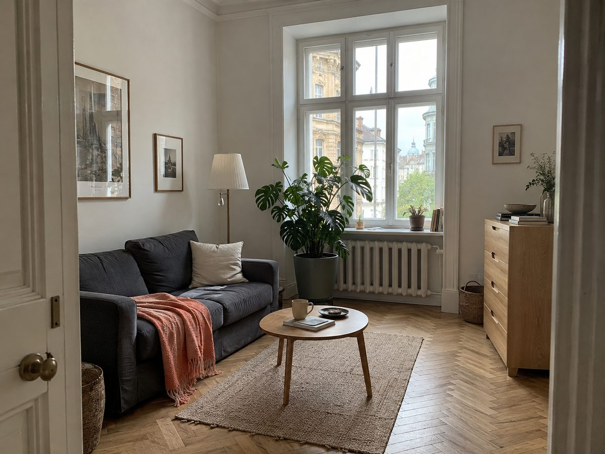
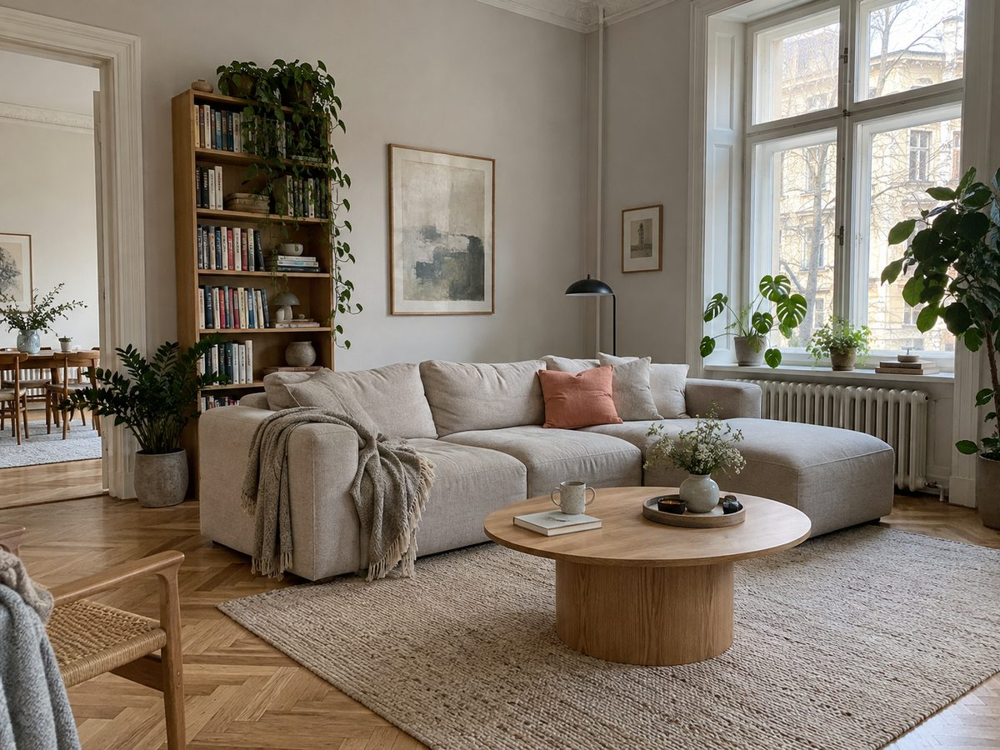
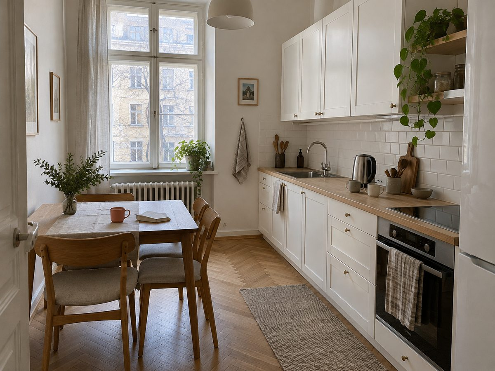
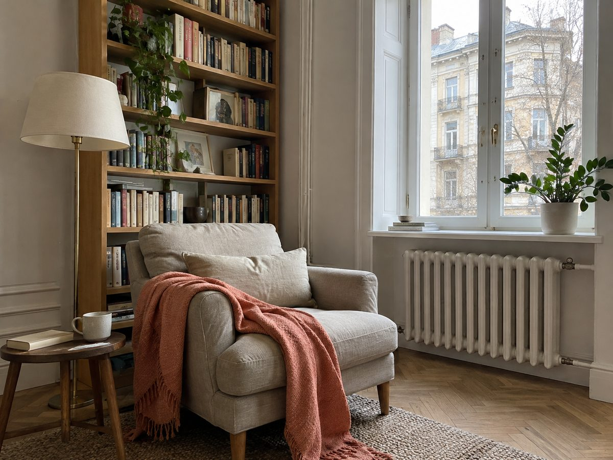
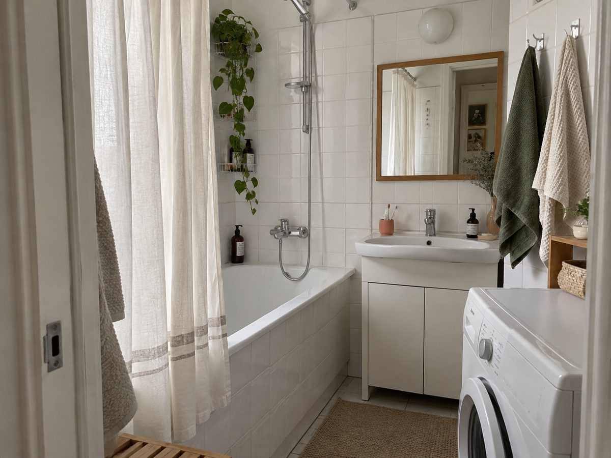

Усі компоненти, що повторюються на двох і більше сторінках вайрфреймів, з усіма станами, які є в макетах. Значення — з tokens.css (primitive → semantic), класи — з components/; тексти — з microcopy.md (колонка «Стало»). Пофарбовані компоненти мають збігатися з еталоном у wireframes/.
tokens.css components/index.css ui/shell.html ui/inventory.md DESIGN.md
Розмітка з shell.html: двошарова шапка (заголовок + смуга чипів) і нижнє меню. Новий екран копіює файл і заповнює .shell__main. Інші поєднання верху й низу — нижче, їхня розмітка лежить у <template> того самого файла.
body.shell.shell--header.shell--tabbar · .header__top / .header__bar · .tabbar
Екрани: listings, listings-loading, listings-empty, listings-error. Чип «Фільтри · 3» відкриває шторку.
Компактна шапка + панель дії (profile*), шапка поверх фото + панель дії (listing*), шапка з людиною + поле чату (chat*).
.listing-card · __photo __body __title __link __meta · .price-tag · список — .card-list
Екрани: listings, listings-loading, profile, profile-empty. Уся картка — одне посилання; бирка лежить на фото. Пігулка автора на фото є лише в listings — у кіт не входить.
10 500 грн/міс

9 800 грн/міс
.avatar --md --lg · .avatar__mark
Екрани: listings, listing, profile, profile-empty. Позначка — 16px на малих аватарах, 24px на великому. На сірій поверхні обвідка позначки сіра (--avatar-ring).
.profile-head · __name __caption
Екрани: profile, profile-loading, profile-empty.
Здає кімнату біля Лук’янівської
Здає кімнату біля Лук’янівської
.section-title · .group __row __label __value · --padded
Екрани: listing, listing-loading, profile, profile-loading, profile-empty. Рядки-скелетони при завантаженні — ті самі .group__row, тому мають висоту рядка 48px.
.group__row.verified-note · __icon __text __title __limit
Екрани: listing, profile, profile-empty. Завжди з межею перевірки поруч.
.person-row · __text __name __caption — усередині .group__row
Екрани: listing, listing-loading. Веде в профіль.
.hero-photo · .gallery __item · .listing-title __name __meta
Екрани: listing, listing-loading. Фото на всю ширину й під статус-бар; лічильник «1 / 5» — разовий, у кіт не входить.
10 500 грн/міс




.results-meta
Екрани: listings*. Один рядок — чотири стани.
.button.button--primary · --block
Екрани: 11 сторінок. Одна на екран. Тексти: «Написати Ірині», «Застосувати фільтри», «Змінити фільтри», «Спробувати ще», «Назад до результатів».
.button.button--secondary
Екрани: listing-error, profile-error — друга дія під кораловою.
.button.button--text
Екрани: listings* — «Скасувати» в шторці.
.chip · --selected · ряд — .chip-row > __track
Екрани: listings*. Вибраний (корал-чорнило) — лише «Фільтри · N», відкриває шторку; решта показують значення. Ряд скролиться, правий край згасає.
.field · __label · .input на select / input
Екрани: listings* (у шторці фільтрів). Типи: список, число, дата тільки для читання.
.state · --error · __icon __title __text __actions
Екрани: listings-empty, listings-error, listing-empty, listing-error, profile-error, chat-empty, chat-error. Мальована іконка 72px; у помилці червона й role="alert".
Зміни бюджет, район або дату заїзду.
Представся й запитай, чи кімната ще вільна і коли можна прийти на перегляд.
Кімната вже недоступна. Інші оголошення — в результатах пошуку.
Перевір з’єднання й спробуй ще. Чернетку збережено — її не надіслано.
Перевір з’єднання й спробуй ще.
.skeleton · --title --line --w60 --w40 --photo --button --avatar --avatar-lg --bubble · .skeleton-stack .skeleton-person
Екрани: listings-loading, listing-loading, profile-loading, chat-loading. На білому — колір поверхні, у сірому списку — на тон темніший. Поруч — невидимий для очей статус role="status" («Завантажуємо оголошення / профіль / повідомлення»).
.chat-context · __thumb __text __title __meta
Екрани: chat, chat-loading, chat-empty, chat-error. Веде на оголошення.
.messages > .bubble · --mine · __time
Екрани: chat; chat-loading — скелетон. Мої — чорнило, чужі — поверхня; «хвостик» 4px біля автора.
.composer · __input __send
Екрани: chat, chat-loading, chat-empty, chat-error. Поле росте з текстом до 112px. «Надіслати» коралова лише тоді, коли є що надіслати: інакше aria-disabled="true" — сіра, щоб на екрані помилки коралова дія лишалась одна.
Поля коду верифікації, чекбокса й банера немає в жодному wireframes/*.html, тому в кіті їх нема. Вони з'являться разом з екранами з sitemap.md, яких ще не намальовано.
.banner був у старих стилях вайрфреймів, але жоден екран його не використовував.Стоїть лише на одній сторінці (див. ui/inventory.md).